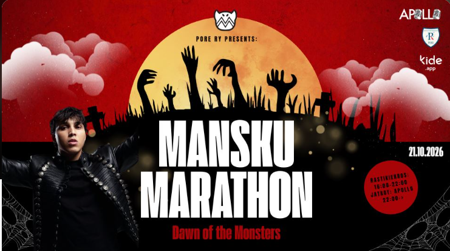
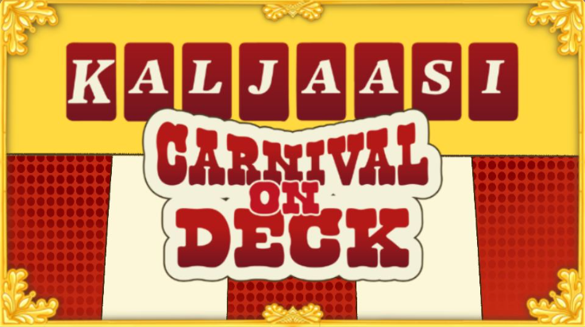

Manskun marathon
21.10 tapahtuu 37. manskun marathon. Minulla on tapahtumaan Monsteri-paketti, johon kuuluu tuplapassi ja kauhukierros

21.10 tapahtuu 37. manskun marathon. Minulla on tapahtumaan Monsteri-paketti, johon kuuluu tuplapassi ja kauhukierros

Kaljaasi-opiskelijaristeily on Suomen suurin opiskelijaristeily, joka järjestetään seuraavaksi 8.–10. marraskuuta 2026 reitillä Helsinki–Tukholma–Helsinki (M/S Silja Symphony).
